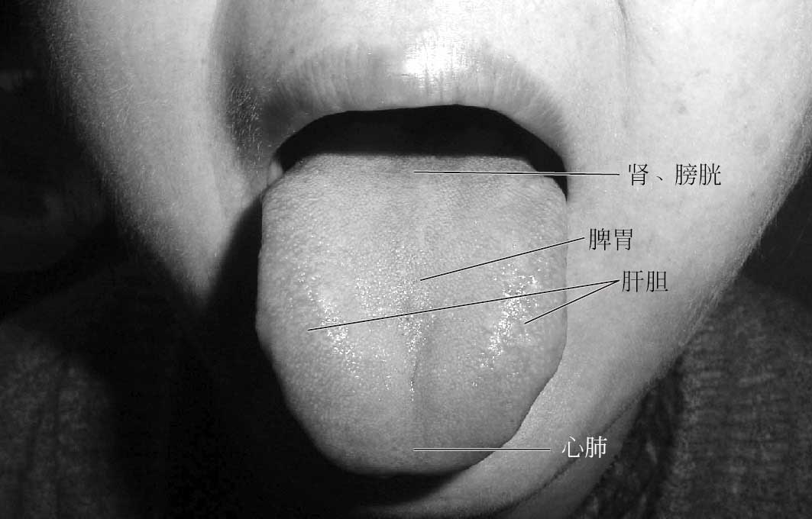
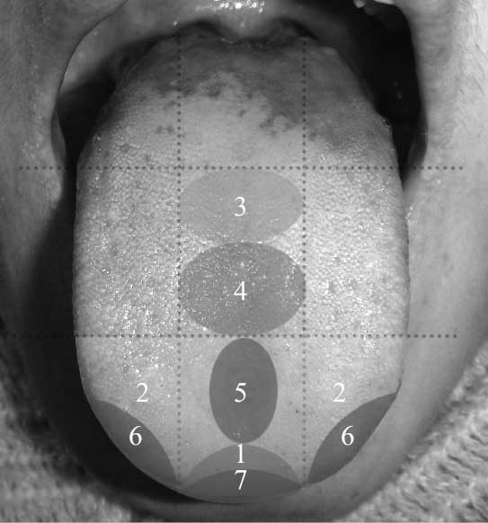
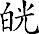
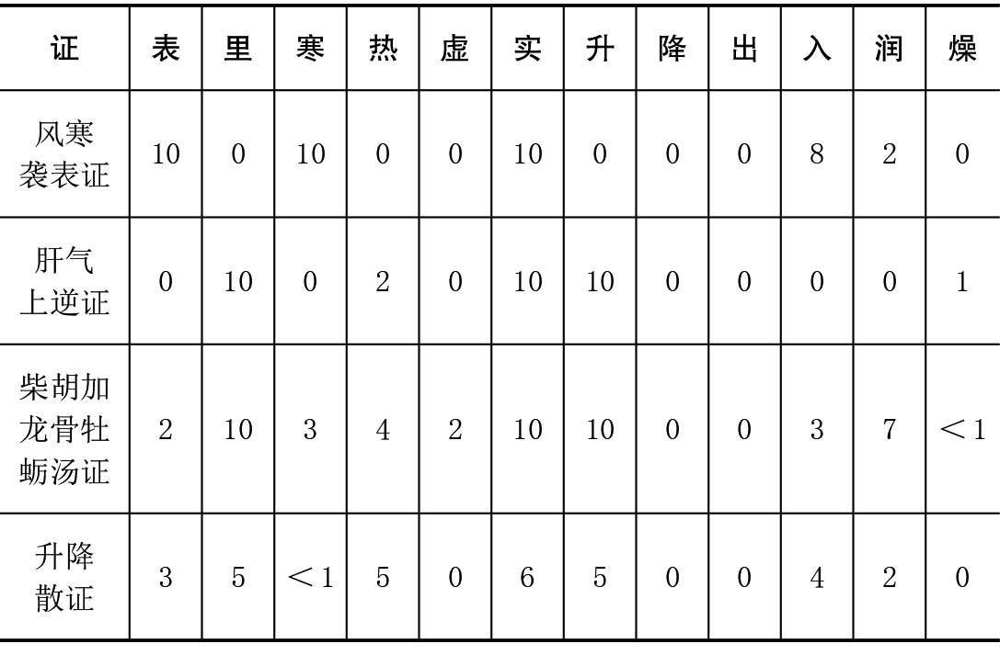
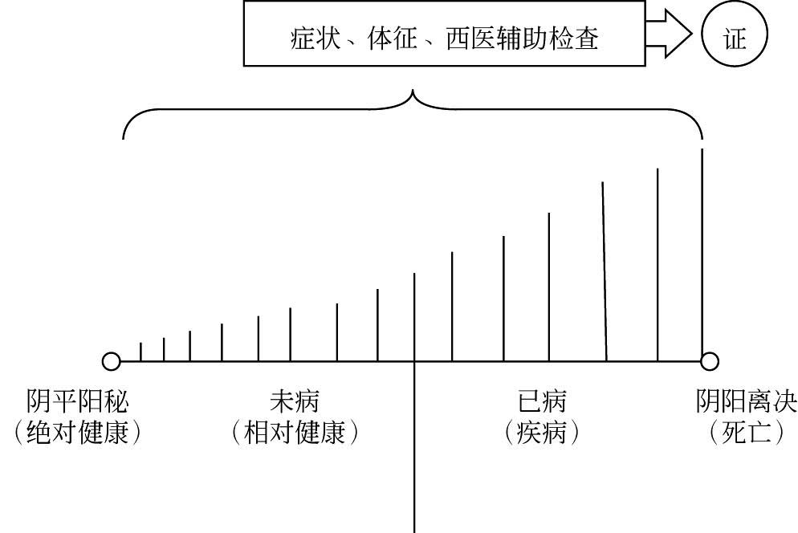

小郎中看病不疑惑
Must Watch!
MustWatch
小郎中看病不疑惑：实习中医师快速入门指导
作者：何宽其。
出版社及出版时间：〈化学工业出版社〉2016-08-01。
内容简介：本书是编者为解决实习中医师上临床后在诊断、治疗上的困惑而编写的。
怎么把握四诊的诊断权重？怎么把握证与症的关系？怎么考量证？中医怎么辨治疾病？应掌握哪些一线的方剂？一些经典方剂，怎么应用？对于一些常见病症，怎么选方？怎么治疗湿热证、咽痛、寒咳、热咳、湿疹、荨麻疹等疾病？……本书将一一解答。
力求让实习中医师在面对患者时，能抓住诊断要点，能按“章法”正确开方。
本书适用于实习中医师阅读参考。
前言
我是厦门大学的一名普通中医学教师，临床带教是我日常工作的重要组成部分。
在临床带教过程中，我经常发现：不少中医学生在经过前期的理论学习进入临床实习时，面对患者，头脑里一片懵懂，诊断时把握不住要点，尤其遇到数证并存的复杂病证，更是头脑一片空白；开方时不知所措，所处之方，章法紊乱，很难见到学生开出经典名方如小柴胡汤、桂枝汤等。
无论诊断还是处方用药，学生似乎都找不到“抓手”。
因此，我很想写一本书，要给作为“新手”的中医学生“三板斧”，引领他们尽快进入中医的殿堂，之后再掌握“N板斧”，以求达到精深的境界。
那如何让中医实习医师尽快入门呢？我认为，从经典方剂和方证着手是一个切实可行的方法。
说得通俗点，就是让他们首先学会应用经典方剂，掌握经典方剂的方证。
但教材上介绍了很多经典方剂，要让学生在短时间内一下子掌握那么多经典方剂，根本不可能！基于此，我根据自己的临床体会，精选了近百首经典方剂，详细地进行了方根分析和方证分析。
另立一章“经典方剂的应用”，以进一步强化临床最常用经典方剂的知识，如对小柴胡汤家族和温胆汤家族的论述，以致学生经常说“何老师总是用柴胡类方给我们洗脑”。
对于常见病证，我提出了选方策略，以使学生能举一反三、融会贯通。
对于中医基础、中医经典、中医诊断、中医治疗、经方学习与应用等方面的一些热点问题，我能结合自己的临证心得进行阐述，给学生以参考。
此外，本书还对中医体质、中医食疗等问题进行了有益的探讨，以给中医学生和中医师更为宽阔的中医视野。
本书在编写过程中得到了厦门大学医学院中医系部分学生和同行朋友的大力支持，尤其是山东刘毅中医师慷慨提供部分素材，在此一并致谢！本书也得到厦门大学以下横向科研课题的资助：中医舌诊健康咨询系统（项目编号：XDHT2014008Z）和“一真”牌药茶研制（项目编号：XDHT2013280A）。
何宽其
于厦门五缘湾
2016年2月18日
中医基础与诊断
舌尖主什么病？
舌诊历史悠久，是中医诊断方法的重要组成部分，在中医诊断学中具有举足轻重的作用。
舌尖望诊，是舌诊必不可少的部分。
探讨舌尖主病，对深入研究舌诊具有重要意义。
一、舌尖的脏腑分部
传统分部：江笔花的《笔花医镜》提出“舌尖主心”，梁玉瑜的《舌鉴辨证》认为“舌尖主心、心包、小肠、膀胱（应大肠命门）”，吴坤安《伤寒指掌》指出“舌尖属上脘”，大学统编五版教材《中医诊断学》主张“舌尖属心肺”（图1-1）。

图1-1 舌面脏腑的传统分部
现代分部（图1-2）：当代学者黄英儒提出了舌面脏腑分部的九区分法，该分区法认为舌尖为泌尿生殖器官、神经系统的分部区域
［1］。
生殖器官在舌尖的分部，对男性而言，舌尖中部为前列腺的分部，舌尖的两边为睾丸的分部；对女性而言，舌尖中部为子宫的分部，舌尖的两边为卵巢和输卵管的分部。

图1-2 相对确定的舌面脏腑现代分部
1区（含7区）—大脑；2区（含1、5、6、7区）—肺；3区—胃；4区—十二指肠和小肠；5区—大肠；6区—卵巢和乳房；7区—子宫、前列腺。
舌尖脏腑的传统分部和现代分部既有区别，又有一定的联系，在临床运用时可以互补。
二、舌尖主病
单独出现舌尖淡白、淡红、绛的情况临床少见，所以舌尖淡白、淡红或绛常常是整个舌体淡白、淡红或绛的一部分，与整个舌体淡白、淡红或绛的主病一致。
需要注意的是，有些患者伸舌时较紧张，使舌前部的肌肉收缩，而呈现舌前部淡白的征象，无病理意义。
嘱患者放松，自然伸舌，就会消除这一现象。
舌尖红，或有红点，或有芒刺，可主以下病证。
（1）心火亢旺。
舌尖脏腑的传统分部认为，舌尖属心，故心火亢盛可以出现舌尖红，或舌尖有红点，或舌尖有芒刺，临床表现为失眠、心烦、口疮、口腔溃疡等症。
（2）失眠症。
根据黄英儒和笔者的临床观察，失眠症大多都会出现舌尖红，或舌尖有红点，这已被大量的临床病例所证实。
除了心火亢盛导致的失眠可以出现舌尖红或舌尖有红点之外，心脾两虚、心胆虚怯、胆郁痰扰、肝胆火旺等导致的失眠也可出现这一病理征象。
（3）风热外感。
外感风热引起的舌尖红或舌尖有红点，在临床上较为常见，古代文献也有诸多记述。
中医认为，舌尖属心肺，叶天士的《温热论》有载“温邪上受，首先犯肺”，故风热或风温侵袭肺卫，可出现舌尖红。
（4）血热型或阴虚火旺型崩漏、月经先期、月经过多。
张靖敏观察的1260例妇科病例中，因过度劳心、心火偏亢、引动相火、迫血妄行所致之月经过多（65例）、崩漏（15例）、月经先期（30例），均出现舌尖部之丝状乳头处呈鲜红色或舌边尖出现散在分布之鲜红色点
［2］。
（5）前列腺炎（慢性或急性）。
根据厦门大学医学院王彦晖教授的经验，前列腺炎患者常会出现舌尖红，这与舌尖为前列腺的分部一致。
笔者亦曾亲历一例舌尖红主慢性前列腺炎的病例，该病例排除了失眠、风热外感、心火亢盛等因素引起的舌尖红后，确定为慢性前列腺炎引起的舌尖红。
当然，如果舌尖红只是整个舌体红的一部分，那么其主病与整个舌体红的主病一致。
舌尖青紫，或有瘀点瘀斑，主瘀血病证，尤其是对妇科瘀血病证有很高的诊断价值。
根据笔者的临床观察，月经不调、月经颜色暗黑、月经有血块、痛经、瘀血型崩漏、癥瘕积聚（子宫肌瘤、卵巢囊肿以及妇科恶性肿瘤）大多都会出现特征性的舌尖青紫，或瘀点瘀斑。
张靖敏观察的1260例妇科病例中，因情志不和、肝气郁结、气滞血瘀所致之月经病（崩漏27例、痛经33例、经闭8例、癥瘕4例、乳癖6例）等病常会出现舌质紫褐或舌尖、边有紫点（或块）、或褐红色点（或块）
［2］。
根据笔者的临床观察，男性舌尖单独出现青紫或瘀点瘀斑的现象较少。
有少数患者舌尖的瘀点或瘀斑为色素沉着，无病理意义。
如果舌尖青紫只是整个舌体青紫的一部分，那么其主病与整个舌体青紫的主病一致。
三、结语
舌尖望诊，既要注重舌尖局部的舌象特征改变，也要和整个舌体的舌象特征改变结合起来分析。
笔者从文献和自己的临床经验对舌尖主病进行了探讨，但大多还处在一种经验状态，以后的研究尚须借助临床流行病学和统计学的方法，对舌尖主病进行科学的整理、归纳和总结。
参考文献
［1］黄英儒，王荣球. 舌体应内脏部位的九区分法－探讨（录像资料）. 北京：中华医学音像出版社，1987.
［2］张靖敏. 中医舌诊与妇科病的关系. 光明中医. 1997，1：20-24.
怎么用补益药？
马荟涵（马）：老师，临床治疗用补益药，或日常生活调理用补益药，对舌象有什么要求呢？
何宽其博士（何）：这个问题问得太好了！用补益药，对舌象有较高的要求，具体如下。
① 舌苔薄或少，食纳正常者，可放心用补。
② 舌苔薄或少，食纳欠佳者，可小量用补。
③ 舌苔厚或厚腻，食纳尚可者，用补当慎，一般选用甘淡健脾之品，如太子参、山药、扁豆、白术、茯苓。
④ 舌苔厚或厚腻，食纳欠佳者，不宜用补！
马：看来舌苔对是否用补益药具有重大的参考价值，另外还要参考食纳情况。
那为什么舌苔能决定是否用补呢？
何：舌苔浅薄标志邪气的浅深，舌苔厚，说明邪气重，尤其是厚腻苔，说明湿浊、痰浊、食积内盛，这些邪气很容易碍脾胃，这时患者即使身体虚弱，也往往虚不受补。
舌苔薄或少，说明邪气轻浅或纯虚无邪，如果食纳正常，即可放心用补。
马：对于舌苔厚，虚不受补者，应该如何治疗呢？
何：这时就要采用宋代医学家许叔微的观点“先驱邪后议补”，先把邪气驱除，待舌苔转薄，食纳转佳时，逐渐开始补益正气。
马：舌质对于用补有何指导意义呢？
何：舌苔决定是否用补，舌质决定用什么补。
一般来说，舌质淡白，多为气虚、血虚、阳虚，所以通常选用补气药、补血药和补阳药；舌质红，苔薄或少，舌面干燥，多为阴津亏虚，通常选用养阴生津药。
马：这里谈到了用补的舌象要求，我想还要结合症状、体征、脉象等进行综合分析吧。
何：对，这就是中诊的所谓“四诊合参”。
瘀血舌象，十之七八？
陶岚婷（陶）：老师，上了临床，才知道，瘀血舌象这么常见哈！
何宽其博士（何）：是的，说瘀血舌象，十之七八，应该不为过！那我考考你，瘀血舌象的特征有哪些呢？
陶：瘀血舌象，主要体现在舌质上，比如舌紫，舌暗，有瘀斑、瘀点。
何：不错。
补充一点，舌下络脉瘀紫怒张。
在诊断瘀血证时，常常相互参看舌质与舌下络脉，有时舌质未见瘀血征象，但舌下络脉却反映出来了。
当然，舌下络脉的诊查，有时因为患者不能卷舌而受影响。
陶：噢。
那为什么临床会见到如此多的瘀血舌象呢？
何：我想，原因是多方面的。
正常的淡红舌质，通常在小孩中见到，这时脏腑轻灵，气血冲和，所以瘀血舌象相对少见。
但随着年龄的增长，机体的衰老，成年后精神情绪的波动，生活方式的不健康，比如熬夜、运动过少、过食肥甘厚腻，身体就会离“气血冲和”越来越远，逐渐出现气血流通欠佳，甚至障碍的情况，所以瘀血舌象就比较容易见到，尤其在老年人中就更为普遍。
陶：那对于有瘀血舌象的人，应该怎么治疗和养生保健呢？
何：有瘀血舌象的人，如果瘀血很重，同时近亲有罹患肿瘤、心脑血管疾病的，应该定期做体检，防止肿瘤、心脑血管病的发生；如果有临床症状，体检也有问题，那就要用活血化瘀或破血逐瘀的方药，如桂枝茯苓丸、血府逐瘀汤等；如果没有临床症状，体检也正常，则可以施以养生保健的方法，可以服用三七粉、复方丹参滴丸，平时多运动，保持良好的心态，不熬夜，注意保暖，多吃点木耳、海带、魔芋豆腐等。
陶：对于阳虚、湿热、气滞、痰浊导致的瘀血，还要治疗上游的病因。
何：对。
脉诊不疑惑
脉诊十二纲：浮沉、迟数、虚实、大小（细）、滑涩、弦软。
这十二纲是脉诊的基本要素，浮沉是标志脉象深浅的纲领、迟数是标志脉率快慢的纲领、虚实是标志脉象有力无力的纲领、大小（细）是标志脉体大小的纲领、滑涩是标志脉象流利度的纲领、弦软是标志脉象紧张度的纲领。
习惯上，小脉常被称为“细脉”。
此外，长短、有律无律也是脉象的重要特征，但对中医临床指导意义不大，故不予列入脉诊纲领。
已有的脉象理论太复杂，脉象种类太多，反而不利于学习和掌握，尤其对初学者，故笔者主张简化脉象，例如把紧脉归并到弦脉，洪脉与大脉整合，缓脉分解为迟脉、软脉，弱脉分解为沉脉、细脉、虚脉，濡脉分解为浮脉、细脉、软脉，芤脉分解为浮脉、大脉、虚脉等。
笔者在临床一般也只切此十二纲脉象，当然还会结合寸关尺三部。
不过，有时在习惯上仍可沿用缓脉等脉名，但需清楚缓脉就是脉诊要素中迟脉和软脉的组合脉。
当然，如果读者对脉象特别有感觉，想精深研究，则需在十二纲脉之基础上升华和提高。
反正笔者就止于此十二纲脉了，兹对脉诊十二纲详述如下。
一、寸口脉常见脉象
1. 脉位
（1）浮脉：脉位表浅，轻取即得。
① 生理：瘦人多见浮脉。
② 病理。
实证：浮而有力，重按不减。
在外感病，主邪正交争于体表；在内伤病，主阳气亢盛于上，如肝阳上亢、心肝火旺。
虚证：脉浮但重按无力，主正虚虚性阳气亢奋，如虚阳上越、气虚阴火内生。
（2）沉脉：脉位较深，重按始得。
① 实证：沉而有力。
在外感病，为外邪入里，如伤寒病邪气从三阳入于三阴、大承气汤证燥屎与邪热搏结于肠腑；在内伤病，主阳气被郁结于里，不得宣通，如肝气郁结可见脉沉弦细，临床多见四肢末端厥逆或厥冷。
② 虚证：沉而无力。
主阳气亏虚或下陷，阳气不能升发。
多见于内伤病。
2. 脉率
（1）迟脉：脉率低于60次/分。
① 生理：多见于运动员和体质壮实者。
② 病理：可见于阳虚证、实寒证。
（2）数脉：脉率高于80次/分。
① 实证：数而有力。
主邪盛正不虚，邪正交争。
如实热证。
② 虚证：数而无力。
主正虚，阳气虚文虚性亢奋。
按：教科书上通常以脉的迟数来分辨寒热，但对于寒热的辨别，主要通过舌象，即舌红主热，舌淡主寒，而脉象的迟数对于寒热的分辨作用非常有限。
3. 脉的大小
（1）大（洪）脉：脉体宽大。
主阳气亢旺，阴血充盛，邪正剧烈交争。
（2）小（细）脉：脉体细小。
① 实证：细而有力。
主阳气郁滞，如肝气郁结、湿证可致细脉。
② 虚证：细而无力。
主正虚，尤其是阴血亏虚。
4. 脉的力度
（1）实脉：脉象有力。
① 生理：脉象柔和有力，为正常脉象。
② 病理：脉象过度有力，主邪盛正不虚，阳气亢旺。
（2）虚脉：脉象无力。
主正虚，尤其是阳气亏虚。
5. 脉的流利度
（1）滑脉：脉搏流利，古书形容“如珠走盘”。
① 生理：为正气充沛、气血流畅之象。
为正常脉象或妊娠脉象。
② 病理：为邪盛正不虚，邪正交争之象。
如实热证、痰热证、食积证。
（2）涩脉：脉搏艰涩不畅，古书形容“轻刀刮竹”。
主气血不流畅，如血瘀证。
6. 脉的紧张度
（1）弦（紧）脉：脉体紧张度较高，古书形容“如按琴弦”。
主阳气郁结（气分）、血管硬化（血分）。
脉弦者，多见情绪波动，如心烦、急躁、易怒、紧张、郁闷等，易患精神心理疾病。
（2）柔（缓、濡）脉：脉体柔和或柔软。
① 生理：柔和有力，为正常脉象的表现。
脉象柔和者通常情绪佳，心态好，脾气温和，不易患精神心理疾病。
② 病理：柔软无力。
为正虚之象。
除了以上所述的十二脉外，还有长、短一对脉，简述如下。
7. 脉的长短
（1）长脉：脉体较长，寸关尺三部可触及。
① 生理：“长则气治”，在生理情况下，长脉多为正气充沛之象。
古书认为，正常情况下，脉象上鱼际为长寿之象。
② 病理：为阳气亢旺，邪正交争之象。
（2）短脉：脉体较短，或不足于寸，或不足于尺，或不足于关。
多为正虚之象。
虽然教材上有短脉主气郁之说，但临床上较难见到。
二、寸口脉三部分诊
1. 寸口脉整体分部
寸：胸以上。
关：膈下至脐。
尺：脐以下。
《难经·十八难》：“上部法天，主胸以上至头之有疾也；中部法人，主膈以下至脐之有疾也；下部法地，主脐以下至足之有疾也。”《素问·脉要精微论》：“上竟上者，胸喉中事也；下竟下者，少腹腰股膝胫足中事也。”
2. 寸口脉的脏腑分部
左脉：左寸关尺分别主肺、肝胆、肾阴。
右脉：右寸关尺分别主肺、脾胃、肾阳。
按：寸口脉的脏腑分部对于脏腑辨证非常有意义。
某脉独特地出现于某部，具有重要的诊断价值。
《素问·三部九候论》：“察九候，独小者病，独大者病，独疾者病，独迟者病，独热者病，独寒者病，独陷下者病。”
三、寸口脉的合参事宜
1. 寸口脉总诊与三部分诊合参
如弦脉出现在右手，虽然不在肝胆的分部，但仍然可能主肝胆疾病（有的文献说这种情况是“木乘土位”）。
如虽然左手寸关尺三部为心、肝胆、肾阴，但左脉弱仍然可能为肺脾气虚之象。
2. 寸口脉诊与望诊、问诊、闻诊、狭义按诊（含腹诊）的合参
如寸口脉虚，不可单纯地据脉诊断为虚证，如果同时有舌紫、黄腻苔，那么则是虚实夹杂证，为正虚、瘀血、湿热（或痰热）夹杂之证。
3. 脉的顺逆
如身体极度虚弱，本应见弱脉或虚脉，却见大脉，为正虚邪盛，预后不良，所谓“大则病进”。
反之，邪气亢盛，本应见大脉或洪脉，却见弱脉，为正气匮乏，无力抗邪之象，预后不良。
起床时症状加重，主实证；起床后缓解，多主虚证
李姝磊（李）：老师，有个小问题想问您一下，就是上临床实习以来，发现有些患者的临床症状，在起床后加重，但活动一段时间就缓解了，这是怎么回事，我在教材上也没有找到答案。
何宽其博士（何）：这是个好问题。
记得10年前我在跟诊王彦晖教授时，也遇到过同样的问题，经王教授的解答，才雾散云开。
如果临床症状在起床时加重，主实证。
当机体本身有风寒湿、湿热、瘀血、痰浊、水饮等邪气阻滞经络脏腑时，由于睡觉时人体气血循行相对迟缓，则邪气的阻滞就更为严重，所以起床后会感觉症状加重。
但为什么活动后症状得到缓解呢？因为活动时，机体的气血循行加快，气血流畅，原先的“阻滞”就自然缓解了。
李：噢，原来如此！那如果症状在起床后缓解，则如何解释呢？
何：症状起床后缓解，多为虚证。
如虚证的腰痛，经过睡眠休息，人体正气得到修复与补充，则腰痛可得到缓解。
李：中医有“劳则气耗”、“动则耗气”的说法，教材上在描述虚证尤其是气虚证时，常常说“活动后诸症加重”，所以与实证的活动后缓解相反，虚证往往在活动后症状加重，对吧？
何：对，是这个理儿。
一有症状或体征，就应立即除之吗？
症状、体征，犹如双刃剑，既是疾病对人体的伤害，也是机体对疾病的防御反应和自我修复反应。
但在临床上，我们很容易产生一边倒的心理倾向，一见到有症状或体征，就会产生“斩草除根”、“必除之而后快”的心理。
如果说普通民众有此想法，尚可理解，但为医者有此偏颇的想法，则不应该了。
发热、汗出、咳嗽、咳痰、恶心、呕吐、腹泻、疼痛、疮痈的红肿热痛、皮肤疾病的皮疹、水疱等——这些临床常见的症状或体征，也是我们人体的防御、修复反应。
下文就发热、咳嗽、腹泻、疼痛等试浅议之，以求抛砖引玉。
1. 发热
极为常见，尤其在中医的外感病中。
生病发热了，要不要退热？当然要退，但是退热很有讲究。
一般来说，体温在39℃以上，要考虑积极退热，以防高热对大脑的损伤；体温在38～39℃，可以观察，不必急于退热，或仅采用物理降温法；而体温在38℃以下的低热，仅治疗病因即可，不必对症性地退热。
为什么要采取如此策略？因为发热，既是一种症状，也是机体抵御外邪的一种反应，我们不能搞一刀切、一棍子打死的方法，而应据临床实际区别对待。
在我的家乡，有一位乡村医生，在当地可是有点名气的，就是因为她是“退热高手”，小孩上呼吸道感染（感冒）发热了，去挂一两天水，保准退热。
但其退热的“秘诀”是什么呢？就是糖皮质激素、解热镇痛药和抗生素。
这对于急功近利的医者和患儿家属，可谓皆大欢喜，但是最终受害的却是患儿。
经此折腾，患儿体质每每下降，三天两头感冒，此起彼伏，贻害可谓大矣！但乡民仍然把这个乡村医生捧得很高。
这种现象，在缺医少药的农村似乎很普遍。
笔者以前在南京中医药大学做动物实验，是用酵母诱发大鼠发热以做发热模型，在实验过程中，有一只大鼠体温骤降，结果第二天早上查看鼠笼时，这只大鼠死掉了，而其他发热的大鼠则一直到实验结束都存活着。
这用中医术语讲，那只大鼠是阳气暴脱而死。
临床上，还见到很多老年人或身体极度虚弱者，发生肺病感染时，不发热，白细胞不升反降，但这种患者往往预后最差，也许是因为他的“国防实力”太差了！
2. 咳嗽
咳嗽是呼吸系统的常见症状，但也是机体的正常防御反应。
中医自古就讲究外感咳嗽，病程短者、邪气盛者，不能使用收敛止咳的方药，以防“闭门留寇”，这可以说深深揭示了古人治病的智慧。
笔者临床体会，不少咳嗽患者，往往在痊愈前会猛咳一下，可谓“黎明前的最后一击”，试举例说明。
王某某，男，6岁。
2011年12月27日初诊。
主诉：咳嗽一个多月。
初诊：患儿已咳嗽一个多月，喉间有痰，但咳不出来，无咽痛咽痒，咽部望诊无红肿，扁桃体无肿大，无发热、恶寒，晨起第一次小便较黄，口唇颜色正常，舌淡红偏暗，中根部白厚苔。
中医诊断：咳嗽。
病根：风寒犯肺，寒痰壅肺。
治法：疏风散寒，宣肺化痰，止咳。
方药：华盖散加半夏。
麻黄10g，杏仁15g，炙甘草5g，陈皮15g，茯苓20g，紫苏叶10g，桑白皮15g，法半夏12g，水煎服，每日一剂，分3～4次服用。
二诊：12月28日上午，小孩奶奶打电话诉说，“昨天傍晚开始服药，昨天晚上咳嗽就开始加剧，今天仍然很咳。”我告诉她，这种情况，不是排病反应，就是药不对症。
刚好28日下午有门诊，于是叫她把小孩带过来再看看。
经仔细诊察，结论依旧——风寒犯肺咳嗽。
初步确定咳嗽加剧为排病反应，嘱继续服用前方，并加川贝粉1.5g，每日两次吞服。
三诊：12月29日下午17时多，突然接到小孩奶奶打来的电话，第一句话就是“何医生，告诉你好消息……”原来，小孩29日下午开始，咳嗽就明显缓解了！
按：咳嗽加剧为排病反应还是药不对症？一般来说，排病反应的咳嗽加剧，持续时间为1～3天，之后病情就明显缓解。
3天后咳嗽不缓解，就要考虑药不对症。
只要确信自己辨证用药无误，即可观察1～3天，此时医生自己要心中有数，不然患者及家属看到医生都心无定见，就会更加焦虑心慌，从而对治疗失去信心。
2006年，笔者到马来西亚工作期间，一位马来西亚的中医师也谈到，他曾用小青龙汤治疗一位咳嗽患者，服药后咳嗽反而加剧，之后就明显缓解。
看来，咳嗽加剧作为一种排病反应，在临床上还是比较多见的。
3. 腹泻
腹泻是消化系统很常见的症状，同时也是机体排出毒物的防御反应，用中医术语来说就是“驱邪反应”。
再仔细研读一下《伤寒论》辨太阴病脉证并治篇278条，对此就有更为深刻的理解了。
“伤寒脉浮而缓，手足自温者，系在太阴。
太阴当发身黄，若小便自利者，不能发黄。
至七八日，虽暴烦下利日十余行，必自止，以脾家实，腐秽当去故也。”
对“至七八日，虽暴烦下利日十余行，必自止，以脾家实，腐秽当去故也”这一段，请看看大学第五版教材《伤寒论讲义》的精彩诠释：“……接着下利日十余行，则是正胜邪去的反映，因此，为太阴病将向愈的佳兆。
由于脾阳恢复，运化正常，清阳能升，浊阴得降，原来滞留于肠中的腐秽物不得停留而向下排出，所以腐秽尽则利自止。”这里所说的“脾家实”，指脾阳恢复如常，与“胃家实”为邪实的涵义不同，不可混淆。
脾家实，腐秽当去，是机体的自然疗能，切勿误作病情恶化。
然而，如何正确区分脾阳恢复下利与阳虚寒盛下利呢？必须从整体出发，综合全面病情进行辨证。
在烦利的同时，手足温和，精神慧爽，苔腻渐化，才可判定为正复邪去，邪尽则利自止，不需治疗。
假使手足厥冷，精神困顿，苔腻不化，则下利为病情恶化，决不会自止。
4. 疼痛
疼痛也是很常见的临床症状，它的积极意义在哪儿呢？
（1）在生理情况下，疼痛反射可以让机体躲开有害物。
如手接触到温度较高的物体，瞬间就会因疼痛而躲开。
可以想象，疼痛反射帮人类减少了多少伤害！
（2）在病理情况下，疼痛可以“告诉”我们，身体的哪个部位出问题了，需要处理。
所以在普通外科，对于腹痛患者，不会轻易地止痛，以免掩盖症状，耽误诊断和治疗。
（3）在病理情况下，疼痛导致的功能障碍，可以对患部起到一种保护作用。
比如关节发炎了，红肿热痛，由此关节活动不利，这似乎在“告诉”机体：这个部位有问题，不能像正常时一样使用，要限制使用甚至禁用，否则会导致进一步损害。
在痹证的治疗中，有时服用中药后，肢体关节疼痛反而加剧，之后则大为缓解。
这种关节疼痛加重的现象，有可能是经络在打通之前的一种反应。
中医讲“不通则痛，通则不痛”。
当中药激发机体的阳气以疏通经络，在疏通前的那一刻，可能这种疼痛会加剧，但是经络一旦得到疏通以后，这个疼痛就大为缓解。
对于皮肤的皮疹、斑、水疱一类的体征，从中医角度讲，也是邪气得以透发的表现。
所以清代温病大师叶天士说斑疹“宜见不宜多见”，所谓“宜见”，即指斑疹能透发出来，则邪气有外驱之机，否则邪气内陷，则病情会加重，发生诸多变端。
在中医儿科，麻疹如果突然陷没，则为“麻毒内陷”，为逆证，凶多吉少！在皮肤科疾病的治疗过程中，常常也会见到皮疹、水疱、渗出等皮损一过性加重的现象，实为机体的驱邪反应。
对此，请详见第五章“皮肤科疾病的治疗反应”一节。
四诊的诊断权重尤需把握
曹智睿（曹）：以前学《中医诊断学》和《中医内科学》时，认为诊断一个证，四诊的每一诊资料都是同等重要的，现在上了临床，才发现：不同的证，望、闻、问、切每一诊的重要性是不同的。
何宽其博士（何）：在诊断某个证时，教材上通常不会说哪一诊重要，哪一诊不那么重要，给人一种平铺直叙的感觉。
但在中医临床上，对某个证的诊断，每种诊法的重要性是不同的！这就是“诊断权重”问题。
曹：老师，能举例说说“诊断权重”的问题吗？
何：比如舌诊，对哪些证有较高的诊断权重呢？一般来说，舌质对寒证、热证、瘀血证等诊断权重大，舌苔对痰证、湿证、食积等诊断权重大，但舌诊对气机病变诊断权重很小。
脉诊对气机病变，如气虚、气逆、气陷、气滞等有非常大的诊断权重，但对寒证、热证和湿证等诊断权重非常小。
问诊（畏寒，腰酸膝软，性功能低下）对肾阳虚有较大的诊断权重，闻诊（喉中水鸡声）对射干麻黄汤证有较大的诊断权重。
曹：看来望、闻、问、切每一诊，都有其所长和所短，正可相互补充，相互取长补短。
何：这就是强调四诊合参的原因！下文用一个案例来说明四诊的诊断权重和坚持四诊合参的必要性。
郑某某，男，30岁。
2010年7月4日初诊。
腰酸、膝软、疲乏无力4年，易脱发，性生活时间偏短，耳鸣阵作，头部昏蒙感，畏寒，甚则胸部战栗，四肢末端冰冷，五心烦热，冬天怕冷，夏天怕热，但饮水后小便频多，大便正常，食欲欠佳，口渴，睡眠浅，健忘，精神欠佳，面部晦暗，胸部受过外伤，按之疼痛，似有物阻塞，有“颈椎骨质增生”病史，舌紫，尖红，苔薄黄腻，脉滑。
腰酸，膝软，头晕，耳鸣，易脱发，性生活时间偏短，睡眠浅，健忘——肾精不足。
（问诊）
腰酸，膝软，畏寒，四肢末端冰冷，冬天怕冷，小便清长——肾阳虚。
（问诊、切诊）
腰酸，膝软，五心烦热，夏天怕热，口渴——肾阴虚，虚火旺。
（问诊）
疲乏无力，精神欠佳，食欲缺乏——脾气虚。
（问诊、望诊）
舌紫，胸部外伤史，按之疼痛，似有物阻塞，面色晦暗——胸部瘀血。
（望诊、问诊）
舌尖红，舌苔薄黄腻——湿热内蕴。
（望诊）
按：本案患者肾精不足、肾阳虚、肾阴虚、脾气虚四证的诊断主要依靠问诊，而胸部瘀血的诊断依靠舌诊和问诊，湿热内蕴的诊断依靠舌诊。
如果单纯强调某一种诊法，则有可能遗漏某些证的诊断，如在本案中，仅凭舌象和脉象，就很可能遗漏肾精不足、肾阳虚、肾阴虚和脾气虚四证的诊断。
所以“四诊合参、综合分析”在中医诊断中非常重要，也唯有如此，才能使医生对患者的病情有一个总体的把握。
证与证的关系应这样把握
当一个患者所表现的证超过一个时，证与证之间就具有层次性，通常这种层次性呈现为立体结构。
证与证的关系，可以表现为标本、缓急、主次、因果、平行等。
明确了证的层次性，有利于拟定治疗策略。
［典型病案举隅］
林某某，女，41岁。
2008年10月15日。
腰酸、膝软、畏寒多年，四肢厥冷，面色

白，口唇紫，饮食、睡眠和大小便正常，月经周期规律，经色暗黑，白带多，色黄，气味大，晨起口干苦，舌淡紫，苔薄白腻，脉细涩无力。
分析：本案患者主要有阳虚、瘀血、湿热三个证。
它们之间的关系可以描述如下。
（1）阳虚证与瘀血证的关系：阳虚与瘀血之间具有因果、主次关系，阳虚是因、为主，瘀血是果、为次。
其机制是，阳虚不能温运血脉，致血行瘀滞。
因此，本案患者在治疗上，单纯活血化瘀是不能取得预期疗效的，必须温阳为主，活血化瘀为辅。
（2）阳虚瘀血证与湿热证的关系：阳虚瘀血证与湿热证是缓急、本标的关系，阳虚瘀血证是本、病势缓，而湿热证是标、病势相对急。
因此，治疗上，阳虚瘀血证的治疗需要很长的时间，相对而言，湿热证的治疗收效较快些。
如果湿热证较盛，可采取“急则治标”的原则，先行治疗湿热证，待病情稳定后再缓图固本。
慢变量和快变量与证的层次性
各子系统、各结构单元的行为基本上都服从慢变量的指令，结果才有了整体上统一的行动有序的结构。
该患者，阳虚证、瘀血证可以看作是慢变量，而湿热证可以看作是快变量。
根据“慢变量是系统演化的方向、途径和目的”的观点，该患者的湿热证，随着时间的推演，很可能受阳虚的影响而寒化，演变为寒湿证。
与古人讲的“实则阳明，虚则太阴”相似。
用十二维度考量“证”
证之十二维度，即证的表—里、寒—热、虚—实、升—降、出—入、润—燥六对十二个维度。
用这十二个维度来辨析考量中医的“证”，就能起到提纲挈领、执简驭繁的作用。
1. 表里
表里是考量病位深浅的一对维度。
（1）一般来说，疾病在肌肤、经络，病位表浅，即为表证。
例如外感风寒表证、诸多皮肤疾病、痹证等。
有时，外感表证由于误治、失治，可稽留于表而迁延不愈，这种表证由于病程长、不典型，很容易被忽略误诊。
（2）病在脏腑，病位较深，即为里证。
外感病中后期阶段、诸多内伤杂病，即为里证。
半表半里证，一般来说是特指伤寒少阳病，可参阅《伤寒论》的专篇论述。
疾病可以表里同病，一般采用先表后里或表里双解的治法。
如新加香薷饮证，即为风寒外束、暑湿内蕴之证；藿香正气散证，即为风寒外束、湿困脾胃之证；三拗汤合黄鱼夏蒌汤，可用来治疗风寒入里化热之咳嗽。
表里同病时，衡量其比例关系非常重要，对确定治疗策略有指导意义，如表里比为3∶6，意味着处方中解表药与里证用药的比例为3∶6。
2. 寒热
寒热是考量病性的一对维度。
（1）寒证通常有恶寒、畏寒、对寒冷敏感、喜暖、肢凉、面色白或晦暗、小便清长、大便稀溏、舌淡白、苔白润等征象。
（2）热证通常有发热、易上火、口苦、口渴、面红目赤、小便黄、大便干结难解、心烦易怒、舌红苔黄等征象。
笔者临床体会，舌质对寒热的诊断权值在90%以上，而舌苔可达50%～70%。
对于寒热错杂证，必须分辨寒热的比例，以指导处方用药。
如寒热比为6∶4，则温阳散寒药与清热药的配比为6∶4。
3. 虚实
虚实是考量邪正盛衰的一对维度。
（1）虚证是指正气虚，即人体基本物质气、血、阴、阳、精、津液的亏虚或不足。
（2）实证是指邪气盛，如外感病中风、寒、暑、湿、燥、火（热、温），内伤杂病中的气滞、血瘀、痰饮、食积等。
根据临床观察，外感病初中期多见实证，后期多见虚证或虚实夹杂证；内伤杂病，多见虚实夹杂证和虚证。
虚实夹杂证的治疗策略如下。
① 先扶正再驱邪：用于以正虚为主要矛盾的病证，舌苔偏薄或少苔、无苔者。
如肿瘤患者，元气大伤，虽有瘀血、痰凝等实证，但宜扶正为先，以“留人治病”，不宜行驱邪法以更戕元气。
② 先驱邪再扶正：用于以邪盛为主要矛盾的病证，或虚不受补者，尤其是舌苔较厚者。
如一患者虽正气较虚，但舌苔厚腻，胃脘痞胀，食欲不佳，宜先驱邪气，待舌苔转薄，食欲转佳，再议扶正事宜。
③ 扶正驱邪兼顾：用于正虚邪盛、两者可兼顾治疗者。
在决定治疗策略时，判断虚实比非常重要。
如虚实比为7∶3，则处方中补益药与驱邪药的比例要控制在7∶3左右。
4. 升降
升降是考量气机上下运行状态的一对维度。
（1）升是指气机向上、升浮的趋势，如肝气上逆、肺气上逆、胃气上逆等。
（2）降是指气机向下、沉降的趋势，如中气下陷、大气下陷等。
脉象对升降的诊断非常重要。
如肝气上逆，通常可见左寸关脉浮弦有力，而中气下陷则通常见脉沉细无力。
升降夹杂时，如肝气上逆兼见脾气下陷时，根据升降比确定治疗策略，如升降比为5∶5，则处方中平肝药与升补脾气的药比例为5∶5。
5. 出入
出入是考量气机内外运行状态的一对维度。
（1）出是指气机向外、宣散的趋势，如肾气不固、脾不统血。
（2）入是指气机向内、收敛的趋势，如肝气郁结、风寒束表。
6. 润燥
润燥是考量身体水液盈亏的一对维度。
（1）润是指身体水液代谢障碍而致停聚的状态，具体表现为水、湿、痰、饮的病证。
临床上常见的“口干不欲饮”多为痰饮、瘀血、湿热等邪气阻滞、气不布津所致，为津液的相对不足，笔者称其为“类燥证”，其本质属“润”。
（2）燥是指身体水液的亏虚或不足，具体表现为阴虚、津亏、液脱等病证。
润燥夹杂时，根据润燥比确定治疗策略，如润燥比为6∶4，则处方中祛湿药与养阴药的配比为6∶4。
分析证的十二维度时，不仅要定性，还要定量，以便更好地制订治疗策略，指导处方用药。
例如，证之“热”的维度定量是2、5、8，则对应的方剂中“寒”的维度定量分别为2、5、8，这样才能达到“方证相应”的效果。
换句话说，患者有两分的热，就要用两分清热的药；有5分的热，就要用5分清热的药；有8分的热，就要用8分清热的药。
证之十二维度举隅见表1-1。
表1-1 证之十二维度举隅

注：1.分值以10分为满分，分值越高，说明相关性越大；0分为不相关；不计负分。
2．以上评分仅供参考。
方证之十二维度评分可因方剂中药物剂量的变化而变化。
可参考《常用方维度分析与临床应用》（ISBN：978712-223570）。
在民间辨方证更火热
辨证方法有很多种，如脏腑辨证、经络辨证、三焦辨证、卫气营血辨证、六经辨证、方证辨证，但本质上分为两大类：即辨病机证和辨方证。
大学教材对辨病机证论述得颇为详细，对辨方证则较少论述，而在民间，辨方证则讨论得热火朝天。
因此，辨方证之法有“高校冷，民间热”之说。
无论是辨病机证还是辨方证，都要在十二维度纲领证正确的基本前提下，最后处方用药时也必须确保证之十二维度与方之十二维度相应。
十二维度纲领证，是战略层面的辨证，是从大方向上把握证的性质；病机证和方证，是战术层面的辨证，是从细节上把握证的性质。
1. 辨病机证
将四诊收集的资料，用中医理论进行分析，判断其病位、病性、病势、病机、标本，最后诊断为某种或某些证，这就是所谓的“辨病机证”。
辨病机证，非常注重中医病机的探讨。
病机证主要包括病位证素和病性证素。
如肝火炽盛证，其中肝为病位证素，火为病性证素。
辨病机证是医经派医家所用的辨证方法。
辨病机证在思维模式上采用的是抽象的“归纳分析”方法。
［典型病案举隅］
林某某，男，36岁。
2010年7月4日初诊。
眩晕2年，心烦易怒，易上火，口苦，饮食、睡眠和大小便正常，舌红苔薄黄，脉浮弦，以寸关为甚。
辨证过程分析：
眩晕——肝火上炎，窜扰清窍。
心烦易怒——肝主疏泄，调畅情志。
肝火炽盛，肝气疏泄过度。
口苦——《素问·痿论》曰：“肝气热，则胆泄口苦筋膜干”。
《灵枢·四时气篇》曰：“胆液泄，则口苦”。
肝胆相为表里，肝火移热于胆，胆液泄。
舌红苔薄黄主热证。
脉弦主肝胆病，浮弦、以寸关为甚，提示肝火上炎而致肝气上逆。
本病病位在肝，病性为火热实证，病势中等，病机为肝火炽盛。
辨证：肝火炽盛。
2. 辨方证
方证，是使用方剂的证据或指征以及病机。
辨方证对经典方剂的应用非常重要。
辨方证的三法：①抓主症；②抓引申主症；③抓方证病机。
方证辨证是经方派医家和日本汉方医家所采用的主要辨证方法。
辨方证在思维模式上更多地采用了直觉式的“模式识别”方法。
《伤寒论》《金匮要略》中有方的条文，日本汉方医学所谓的用方“口诀”，历代经典方剂的典型主治病症及其方证病机，以及医者在临床实践中积累的用方指征，就是一个个方证模板，将这些方证模板与患者的症状和体征进行类比比对，就能快捷地辨识出方证来。
辨方证时尤其需要注意的是，必须确保十二维度纲领证正确，这样才不会陷入“机械方症对应”的境地而导致辨证的错误。
［典型病案举隅］
张某某，男，23岁。
2009年6月2日初诊。
反复胃痛2年多，疼痛呈阵发性灼痛，胀满，食后有恶心欲吐感，嗳气，无泛酸，饮食缺乏，睡眠正常，腹泻，小便黄，口干苦欲饮，头胀，头额疼痛，舌淡暗，苔淡黄腻，脉弦重按无力。
2007年3月19日在厦门某医院做胃镜，提示“浅表性胃炎伴幽门口不闭，HP（-）”。
辨证过程分析：
胃脘灼痛胀满对应半夏泻心汤证之“痞”。
嗳气、食后恶心欲吐对应半夏泻心汤证之“呕”。
腹泻对应半夏泻心汤证之“肠鸣”。
辨证：半夏泻心汤证。
按：《金匮要略·呕吐哕下利病脉证治》“呕而肠鸣，心下痞者，半夏泻心汤主之。”临床上，中见“心下痞，或胀痛”，上见“恶心、呕吐、嗳气”，下见“肠鸣，腹泻，或便秘”，即应考虑为半夏泻心汤证。
本案即将半夏泻心汤的《金匮要略》条文与患者的症状和体征进行类比比对，最终辨为半夏泻心汤证。
治症、治证、治病3种中医辨治模式
李志元（李）：何博士，在学中医基础理论的时候，关于中医的特点，一个是整体观念，另一个是辨证论治。
那辨证论治是中医唯一的辨治模式吗？
何宽其博士（何）：非也。
辨证论治的确是中医最重要的辨治模式，但不是唯一的模式。
李：那以您看，中医的辨治模式有哪些呢？
何：我总结了一下，中医的辨治模式有如下3种。
（1）辨症论治（治症）：实际就是对症治疗，即“所谓头痛医头，脚痛医脚”。
如常山截疟、黄连止痢、川芎治头痛、杜仲治腰痛。
（2）辨证论治（治证）：即中医的主流辨治模式，实际上是辨身体的状态以论治。
主要包括医经派的辨病机证论治和经方派的辨方证论治。
（3）辨病论治（治病）：即针对病的治疗，这点和西医的病因治疗没有两样。
如《黄帝内经》记载的鸡矢醴治疗鼓胀，生铁落饮治狂证；《金匮要略》记载的治疟母用鳖甲煎丸、历节病用乌头汤、奔豚气病用奔豚汤、宿食用瓜蒂散。
李：民间有说法“单方一味，气死名医”。
那单方、验方，算一种辨治模式吗？
何：单验方，还算不上一种辨治模式，本质上可归属辨症论治或辨病论治范畴。
李：在临床上怎么灵活应用这三种辨治模式呢？
何：（1）治症：在病情紧急时具有非常重要的意义，如高热时的退热，抽搐时止痉，大出血时的止血，绞痛时的止痛。
西医尤其擅长对症治疗。
另外，高血压病的降压治疗，糖尿病的降糖治疗，我认为也属于对症治疗。
中医的针灸、放血、刮痧、推拿、中成药等在对症治疗方面也颇有特色。
（2）治证：是中医的特色和优势。
很多疾病，单纯治证就能使症状得到改善、疾病获得痊愈或控制，即所谓“身体状态调整好了，疾病也消于无形”。
实际上，单纯治证是启动了身体的自愈功能以达到治病目的。
但是，人体的自愈功能毕竟是有限的。
因此，不少疾病，单纯治证虽然能使症状改善、身体状态有所好转，但疾病本身却无变化，甚至病理损害呈加剧趋势。
此时，单纯治证已显现出明显的弊端，需采取治证和治病兼顾的治疗策略。
（3）单纯治病：中医较少采用这种治疗策略，但对病因单一、病情简单的疾病是很适用的。
如中暑采用刮痧放血、痈疮外敷如意金黄散、用常山截疟、鱼刺卡喉的取鱼刺治疗等。
单纯治病是西医常用的治疗策略，如细菌感染的抗菌治疗，肾结石所致腰痛的碎石治疗，夜盲症补充维生素A、维生素D等。
但单纯治病的弊端也是显而易见的，如放化疗虽然可能使肿瘤缩小，但也会极大地损伤人体正气，如果患者身体壮实还可耐受，如果身体虚弱，则可能得不偿失，而且，放化疗并不能改善产生癌细胞的身体内环境。
李：是啊，不少疾病，中医辨证治疗，虽然症状、体征改善明显，但疾病本身的病理损害却在持续，甚至加重，相关的生化指标或器械检查指标却在恶化。
那如何兼顾治证和治病呢？
何：如果治证与治病在治疗时机上是一致的，则在处方用药时可以“一箭双雕”。
如一个胃癌患者，身体壮实，辨证又属“湿热证、瘀血证”，处方：青皮、八月札、三棱、莪术、鸡内金、浙贝母、瓜蒌、白花蛇舌草、半枝莲、藤梨根，则该处方既符合辨证治疗的原则，也符合辨病治疗的精神。
在中医治疗中，处方用药兼顾治证和治病的原则，是我们要不断追求的。
如果治证与治病在治疗时机上不一致，则需权衡治证和治病的缓急，择善而从。
如一位癌症患者，身体极度虚弱，抗癌治疗，无论是西医的放疗、化疗，还是中医的小金丹、西黄丸、三棱、莪术、半夏、南星、八月札、菝葜、半枝莲，都对患者极为不利，这时，应采取治证的策略，待患者身体情况较好时，再考虑抗癌治疗。
这就是癌症治疗中“留人治病”的思想。
现代的中西医结合治疗，基本就是采用治证与治病相结合的策略。
如癌症的中西医结合治疗，用化疗、放疗、手术等抗癌治病，用中药调理身体以治证，两者优势互补，对提高疗效有非常积极的意义。
李：当代经方家仝小林教授提出“中药药理的临床回归”，您对此如何看？
何：现代的中药药理研究对于拓展中药的使用有很大的作用。
中药药理的临床回归，主要是基于辨证论治和辨病论治这两种治疗模式。
如我们系海虹主任有首方，用黄精、夏枯草和白矾，煎水浸泡或湿敷治疗癣症，如果按传统的中药理论，无法理解为什么用黄精，但从中药药理来理解，就很顺畅，因为黄精有抗真菌作用。
用黄精，从辨治模式来说，属于辨病论治。
舌象就是鉴别燥证与类燥证的关键点
燥证是指外感燥邪或体内津液亏少，脏腑、组织、官窍失却滋润、濡养、充盈，以口渴尿少，口、鼻、咽喉、唇、舌、皮肤、大便干燥等为主要表现的证候。
中医学对燥证的论述可追溯到《黄帝内经》时代，在《黄帝内经》中就有“清气大来，燥之胜也”“岁金太过，燥气流行”“岁木不及，燥乃大行”等记载。
金元时期，刘河间在《素问玄机原病式·燥类》中指出“诸涩枯涸，干劲皴揭，皆属于燥”，补充了《黄帝内经》病机十九条中燥气为病的缺如。
清代喻嘉言《医门法律》立“秋燥论”专篇论述，不仅首创了秋燥病名，并对内燥、外燥做了较系统的论述。
俞根初在《通俗伤寒论·秋燥伤寒》中对秋燥提出“燥凉”和“燥热”的概念。
目前，学术界认为，燥证有内、外之分，内燥为内伤津血、阴液干涸之证；外燥为秋季外感燥邪所致，有温燥和凉燥之别。
临床表现的口渴、咽干、眼干涩、鼻干涩、唇燥、皮肤干燥、大便干结、小便短赤等干燥症状，其病机可分为津液的绝对不足和津液的相对不足。
津液的绝对不足是指津液或阴津的亏虚，津液的相对不足是指瘀血、痰饮、湿热、气滞、阳虚、气虚等导致的津液传输和敷布障碍，而津液本身并无亏虚。
历代所论述的燥证，其病机应当是指津液的绝对不足。
津液相对不足所导致的干燥症状，在临床上大量存在，其诊治常常与津液绝对不足的燥证混淆不清。
为此，笔者提出用“类燥证”来概括津液相对不足所致的干燥症状。
类燥证临床表现与燥证类似，但是也有所区别。
例如舌象就是鉴别燥证与类燥证的关键点，燥证的舌象常常是舌红少苔或无苔，而类燥证的舌象可表现为舌质紫、淡白或胖嫩，舌苔白厚腻或黄厚腻。
对燥证的治疗，《黄帝内经》提出了“燥者润之”、“燥者濡之”的治法，后世多遵循其法。
目前，对燥证的治疗，外燥多采用透解燥邪、生津润燥的治法，内燥多采用滋养阴液、生津润燥的治法。
而类燥证的治法，则根据其病因分别采用活血化瘀、祛痰逐饮、清热利湿、疏肝理气、温阳益气等治法。
燥证和类燥证虽然症状相似，但由于其病机不同，有时在治疗上有很大的差别，所以类燥证概念的提出，具有重要的临床意义。
如风湿免疫科常见的干燥综合征，是一种全身性自身免疫性疾病，主要表现为口干和眼干。
根据我们的观察，干燥综合征属湿热蕴结所致的类燥证者不在少数，清热祛湿才是其正治。
此时，如果因为患者有口干、眼干的症状而不加区别地盲目给予治疗燥证的滋养阴液、生津润燥的方药，则只会使病情加重。
下面结合医案对类燥证进行深入探讨。
病案1：患者女性，25岁。
初诊：2007年10月31日。
干咳2个月，咽痒，咽部微红，扁桃体不肿大，饮食、睡眠和大小便正常，月经和白带正常，舌紫，苔厚腻、黄白相兼，脉弦细数。
患者经多方治疗，服用玄麦甘桔汤、沙参麦冬汤及川贝枇杷糖浆等，未见好转。
西医诊断：急性咽炎。
中医诊断：咳嗽。
辨证：湿热蕴肺，瘀血内阻。
治法：清热利湿，宣肺止咳，兼以活血化瘀。
方药：千金苇茎汤合三拗汤加味。
芦根30g，冬瓜子20g（杵），桃仁12g（杵），生薏苡仁30g，车前子15g（包煎），僵蚕15g，蝉蜕8g，麻黄8g，杏仁12g（杵），生甘草3g，前胡12g，川贝粉5g（冲服），水煎服，每日1剂，分3次服用。
服用3剂后，咳嗽即缓解，后以生薏苡仁30g、绿豆30g、赤小豆30g、扁豆30g，水煎，当饮料服用，并嘱患者饮食宜清淡。
该患者经治疗及调理两周而痊愈。
按：该患者以“干咳2个月”为主诉，前医据此认为属燥证，治以滋养阴津，投以玄麦甘桔汤、沙参麦冬汤等，未见缓解。
笔者根据“舌紫，苔厚腻、黄白相兼”，认为干咳乃湿热蕴肺、瘀血内阻而肺不布津所致，为类燥证，治以清热利湿，宣肺止咳，兼以活血化瘀。
仅服3剂，即取得了明显的疗效。
吴鞠通在《温病条辨·上焦篇》47条中说“太阴湿温，喘促者，千金苇茎汤加杏仁、滑石主之。”本案针对湿热蕴肺的病机，投千金苇茎汤以清热利湿，合三拗汤，一是可宣肺止咳，二是可促进肺宣发津液，方证相应，故取效尤佳。
在笔者工作的厦门地区，由于气候潮湿，湿热蕴肺导致的干咳无痰或少痰的症状非常常见，笔者每每根据其舌苔厚腻而投以千金苇茎汤合三拗汤加味，常常取得满意的疗效。
病案2
［1］：患者女性，38岁。
初诊：2004年8月2日。
患口渴已有3个月多。
初患时已就医，先就西医服药两周，无效。
后就中医诊治，医者给予养阴生津剂，两周未效，继而改用消火养阴药，仍未效。
乃就诊于笔者。
口渴依旧，夜寐醒后口渴更甚，甚至舌不能转动，一定要起身喝口温水，舌转动几下，方觉舒适。
平时食欲欠佳，无饥饿感；大便偏溏，日行1～2次。
全身常感乏力。
舌苔白腻，脉濡，重按近细。
辨证：此乃湿困脾虚，虚则不运。
治法：拟芳燥化湿，理脾升清。
方药：制苍术6g，焦白术10g，广藿香10g，法半夏10g，广陈皮10g，焦薏苡仁12g，煨葛根10g，干荷叶10g，芦根15g（7剂）。
嘱其平时暂不吃水果及甜腻食物，同时亦暂停牛乳、鸡蛋及其他荤菜。
多食清淡易消化类蔬菜。
以上方为主加减治疗至8月23日，诸症悉解，饮食有增，大便亦趋正常。
按：本案为南京中医药大学孟景春教授的验案。
患者以“口渴3个月多”为主诉，前医据此误诊为燥证，予养阴生津或消火养阴药治疗，未见好转。
孟老据“舌苔白腻，脉濡，全身常感乏力，大便偏溏”辨为湿困脾虚证。
治拟芳燥化湿，理脾升清，此乃“以燥治燥”的手法。
方中制苍术、广藿香、法半夏、焦薏苡仁、芦根芳燥化湿；焦白术、广陈皮、煨葛根、干荷叶理脾升清。
方证切合，故取佳效。
而前医误予养阴滋腻，更助湿邪，故治之无功。
本案实为类燥证治验之典范，其“口渴”症状产生的机制：一是湿困脾土，气机阻滞，气不布津，正如清代石寿棠所说“湿郁不能布津而又化燥”；二是脾虚不运，精气不能上输于肺。
通过本案，我们也可以看到，舌诊在鉴别燥证和类燥证中具有重要作用。
病案3
［2］：患者，女，72岁，1996年11月19日初诊。
口渴、尿多伴尿中大量泡沫半年。
诊时述口渴喜热饮，量多，每日3000～4500ml，同时尿量明显增多并含大量泡沫，排尿时有不爽利感，颜色较清亮。
食欲尚正常，食量无明显改变。
全身畏寒，伴有腰膝酸软，外阴瘙痒。
查尿糖（+++），空腹血糖8.9mmol／L。
西医诊断：糖尿病。
患者要求中药治疗。
查舌质淡，苔白，脉沉细无力。
辨证：阴阳两虚之下寒上燥证。
治法予栝蒌瞿麦丸治疗：瓜蒌根30g，瞿麦20g，山药45g，茯苓30g，附片45g（先熬去麻味），蛇床子20g（包煎），水煎服，每日3次。
服药2剂后，口渴开始减轻，尿量亦随之减少，尿中泡沫不似以前严重。
药中病机，效不更方，再进10剂，上述症状大部分消失。
上方附片减为30g继续治疗，前后共进三十余剂，一切症状消失，复查尿糖阴性，血糖降至正常（4.8mmo/L）。
遂以瓜蒌根30g，瞿麦15g，山药30g，茯苓15g，附片20g（先熬去麻味）巩固治疗1个月，再次复查血糖正常，尿糖阴性而停药。
随访1年未复发。
按：本案为刘登祥医师的验案，当属中医“消渴病”范畴。
本案的消渴应责之于肾。
肾主水，水亏或水寒都可导致消渴。
水亏，即肾阴亏虚，水亏所致的消渴属阴液绝对不足的燥证。
水寒，即肾阳亏虚不能蒸腾气化津液，犹如釜中存水，釜底乏薪，不能使水液蒸腾上润釜盖，故水寒也可导致消渴，而这种消渴属阴液相对不足的类燥证。
本案患者全身畏寒，腰膝酸软，舌质淡，苔白，脉沉细无力，故笔者认为其口渴为肾阳亏虚，不能蒸腾气化津液以上润所致，当属类燥证。
治疗上，刘医师选用的是栝蒌瞿麦丸加味，方中重用附片45g意在温补肾阳以蒸腾气化津液。
《金匮要略·消渴小便不利淋病脉证并治》指出“小便不利者，有水气，其人若渴，栝蒌瞿麦丸主之，”栝蒌瞿麦丸的方证为下寒上燥证，其应用于本案乃方证相应，故能取得较好的疗效。
当然，在临床实践中，干燥症状也可能由燥证和类燥证同时引起。
例如，在湿热伤津证中的口渴，既可能为湿热困阻气机、气不布津所致，也可能为湿热耗伤津液所致，须根据临床表现、舌象、脉象综合分析。
对于干燥症状，不管其由燥证所致，还是由类燥证所致，只要牢牢地把握了辨证论治的基本原则，就可执简驽繁，从而大大提高诊治水平。
（注：医案未注明引用出处者为笔者自己的医案；所有医案的按语为笔者加注。
）
参考文献
［1］孟景春编著. 孟景春临床经验集. 长沙：湖南科学技术出版社，2007：63-64.
［2］刘登祥. 栝蒌瞿麦丸加味治疗糖尿病27例. 四川中医，1999，17（1）：24.
不能忽视中药的毒性作用和副作用
王铮（王）：何老师，都说中药副作用小或没有毒性作用和副作用，您怎么看？
何宽其博士（何）：的确，与西药相比，中药的毒性作用和副作用的确是很小的，但是，也不能因为这点而忽视中药的毒性作用和副作用。
王：中药的毒性作用和副作用表现在哪些方面？
何：其实中药的毒性作用和副作用表现与西药并无二致，比如皮疹、瘙痒、恶心、呕吐，严重者出现肝肾功能损害、过敏性休克、喉头水肿窒息等。
王：药物导致的疾病，金元时期的攻邪派医家张从正就提出了“药邪致病”的理论。
何：是的。
在我所知道的中医学家里，就张从正提出了这个问题。
王：您认为，中药毒性作用和副作用的产生有哪些原因呢？
何：首先，辨证不准，误用中药，是最常见的因素。
其次，有的中药，本身就有毒性作用和副作用，如黄药子的肝损害，关木通的肾损害，川草乌的心脏毒性，轻粉的汞毒性。
最后，中药种植过程中产生的农药残留和重金属污染，以及不良商家用硫黄熏中药等。
王：如何预防中药的毒性作用和副作用呢？
何：辨证准确，对症下药，是避免中药毒性作用和副作用的最有效方法。
如果辨证不准，误用中药，会使本无毒性作用和副作用的中药产生毒性作用和副作用！对于有毒性作用和副作用的中药，如斑蝥、马钱子、川乌、草乌、雪上一枝蒿、雄黄、干蟾等，要严格掌握好剂量，严格监测毒性作用和副作用。
对于中药的种植、生产和加工过程，要严格进行质量控制，避免农药残留和重金属超标。
王：现在临床经常使用中药注射液，尤其是中医院。
中药注射液的副作用大吗？
何：有的中药注射液副作用很小，如复方丹参注射液、参麦注射液、醒脑静注射液等。
但有的中药注射液，就不敢恭维。
如鱼腥草注射液，因为导致脑瘫等毒性作用和副作用，已经停用了。
而清开灵注射液，有关的过敏报道不少。
以前我在江苏省中医院实习，就有一个患者因为静脉滴注清开灵注射液而致过敏、喉头水肿，幸好发现及时，迅速推注地塞米松，并行气管插管。
不然很容易导致窒息死亡。
王：临床上，很多患者需要长期服用中药，那如何监测中药的毒性作用和副作用呢？
何：一是看症状，如恶心、呕吐、腹痛、腹泻、心悸、皮疹、瘙痒等。
二是进行必要的生化或器械检查，如定期检测肝功能、肾功能等。
王：您遇到过比较严重的中药不良反应吗？
何：我到厦门工作以来，遇到两例中药所致的肝损害。
一例是我们学校的老师，服用我开的中药后，谷丙转氨酶（ALT）竟然高达每升几百单位，停药、进行保肝治疗才恢复正常，还好这个老师和家属没有怪罪我，但我内心却窘迫不已；另一例是一个患湿疹的高中生，经治疗湿疹倒是好得差不多了，偶然体检发现ALT 90U/L，比正常高了两倍多，AST（谷草转氨酶）43U/L，比正常高一点点，后来停服中药，仅用中药药浴，一周后ALT降到73U/L，AST恢复正常。
王：很多西药会出现副作用，对此，中医如何处理呢？
何：对于西药的副作用，建议患者去咨询西医医生以决定停药或换药。
但我却遇到两位患者，虽然西药有了明显副作用，却无法停用或换药，只好借助中药减缓副作用。
一位非小细胞肺癌患者，服用盐酸厄洛替尼片（特罗凯）后出现皮疹、红斑、甲沟炎，后来甲沟炎治愈，但仍有面部皮疹和红斑，虽有服用中药，却时好时坏；另一位是干燥综合征患者，服用羟氯喹出现皮疹瘙痒，用中药治疗也有所缓解。
但这毕竟是治标不治本！
王：由此可见进行中医治疗时，不仅要辨证论治，还要明了药邪致病。
何：是的。
对于药物的毒性作用和副作用，不管是中药还是西药，都要予以重视。
解表往往有奇效
李涛（李）：最近读了李可老中医的《李可老中医急危重症疑难病经验专辑》，始对“善治者治皮毛”有了深刻的认识。
何宽其博士（何）：是啊，李老先生在张巧爱“风心病合并冠心病”一案中，即以一味黑芥穗深入血分，加入得生丹、小柴胡汤内，益气扶正，活血通经，和解表里，使10年伏邪得以外透，从而使痼疾得愈。
李：以前，我只认为解表药，只是在有表证时才使用，没想到解表法竟然还有如此的妙用！
何：对于此，我以前也没有太多体会，直到后来看了李可老先生的书，以及刘毅医生（网名一三生）的验案，方才有更深的认识。
如李可老先生在他的《李可老中医急危重症疑难病经验专辑》中指出：“余临证经验，凡久治不效、反复发作的重病、顽症、痼疾，或交节病作类疾病，必有六淫外邪深伏。”真可谓经验之谈，值得我们好好玩味。
李：您推荐我看的一三生博客，上面有几篇“解表往往有奇效”的系列文章，也是很有味道！
何：据我了解，一三生博客的主人是山东中医药大学硕士毕业的刘毅医生，这个博客上有不少很有学术价值的文章和医案，“解表往往有奇效”的系列文章是其中的一部分。
李：那我们引用其中的一两篇以飨读者吧。
何：好的。
1. 解表往往有奇效（一）
解表是中医用来治疗外感病的方法，但在内伤病中如果有表证，用解表的方法往往会取得出人意料的疗效——不论这个病有多长时间。
中医治病一个重要原则就是有表先解表——现在往往被人忽视。
下面举一些这方面的例子。
病案一：2010年3月11日。
某某某，女，68岁，心下堵闷4个月。
4个月前，因家事不顺忽感胸闷憋气，头晕，眠差，嗳气，纳呆，现在还伴有头痛夜重，非常怕凉，大便不成形，一日三行，肛门下坠，早晨一起床小腹痛即泻。
此病乍一看是一个肝郁证，前医也是按肝郁治疗，调理1个多月效果不明显。
这位患者确实有肝郁症状，但是也有表证。
处方：麻黄15g，附子30g，细辛15g，干姜30g，炙甘草20g，白芍30g，白术15g，防风15g，陈皮15g，肉桂15g，茯苓30g，两剂。
嘱服药后，温服发汗，并告知一旦得汗两剂后病情就会大减。
果然，两天后患者很高兴地告知医者诸症均大减。
此方用麻附辛解表，四逆汤温脾肾，痛泻要方泻肝补脾。
2. 解表往往有奇效（二）
病例二：2009年3月10日。
张某某，女，72岁，主诉：纳呆近一年。
不思饮食，稍进食胃就胀满不舒，消瘦，无力，经常头痛，肩膀痛怕风，颈紧不适，大便3～4天一行、偏干，脉浮紧。
患者先是请西医治疗了很久没效，后来又找中医治疗，最后在当地中医院住院1个多月，经中西医结合治疗也无效。
患者现在虽然急切想治疗胃病，以解决不能吃饭的问题，但直接治胃效果不会好，前面治疗的失败也证明了这一点。
现在的关键问题还是表不解，表一解胃自然就会见好，处方：麻黄10g，桂枝10g，白芍10g，生姜、大枣、炙甘草各6g，细辛10g，制附子10g，白术10g，茯苓10g，人参10g。
3剂药后，胃纳明显好转，人也精神了，也有力气了。
李：通过刘毅医生的这两个病案，可以看出，解表法对很多顽症、痼疾确有意想不到的疗效，但其很容易被临床医生忽视。
何：解表法只用于外感病、有表证时——这成了临床医生的思维定势！忘记了“善治者治皮毛”的经典名言。
李：理解透了《内经》的一句话，就能解决好多临床难题，看来《内经》不愧为经典！
何：是啊。
像《内经》《伤寒》和《金匮》这些经典著作，是值得我们反复研读的。
可以这么理解“小大不利治其标”
杨海龙（杨）：在学《内经讲义》的时候，《素问·标本病传论》云：“小大不利治其标”。
起初对这句话理解不深，后来看了山西名医朱进忠老先生《中医临证经验与方法》一书中，有篇医话专门论述这句话，这才有了非常深刻的认识。
何宽其博士（何）：是的，对经典的理解，通常是一个渐进的过程，除了读书，还要多临证。
朱老对这句话吃得很透，我看了他这段医话，也颇受启发。
杨：您是如何理解这句话的？
何：说得通俗点，就是一位患者，如果有大小便的障碍，则先要解决大小便的问题，再治疗本病。
大小便的问题，是标证、急症。
跟我们生活中的情形一样，比如我们去旅游或吃饭，突然内急，这时我们不是想到景色有多美、饭菜有多美味，而是马上找卫生间解决生理问题。
杨：这个比喻好贴切！那老师是否有这方面的治疗体验呢？
何：当然有。
柯某，70岁。
2016年1月9日初诊。
胃脘疼痛2个月，牵涉及胁肋，入睡困难。
初诊投以自己屡用屡效的丹栀温胆汤合桂枝茯苓丸，服药一周，竟无寸功！1月16日复诊据“胃痛，牵涉胁肋，目赤，大便干结难解，舌苔淡黄厚腻”，投以大柴胡汤加桂枝（因代煎，药房不备生姜，遂改为干姜），处方：柴胡12g，黄芩5g，姜半夏15g，干姜2g，大枣15g，枳实10g，生白芍30g，生大黄5g，桂枝5g，水煎服。
服用4剂后胃痛已无。
复诊为什么选用大柴胡汤呢？就是基于“小大不利治其标”的理念。
该患者大便干结难解，因此在含大黄的方剂里面选择，综合考虑，选择大柴胡汤，最后获效。
杨：跟诊王彦晖教授时，曾听其说，大便只要不稀溏，就是一种资源，意味着可以用大黄通导以祛邪。
何：是的，大黄是祛邪的重量级药物，应用极为广泛！我非常喜欢用大黄及大黄类方。
另外，温州的金海济网友，是一个经方爱好者，在微信群上发了一个医案求助，说是面色红而灼热，痤疮满面，大便干结难解，口唇紫，舌紫红，苔薄黄而干。
微信群里的网友提出了很多选方建议，但我和一些网友主张用桃核承气汤，后来反馈服药3天后诸症明显好转，因口渴较甚，建议患者改服增液承气汤。
为什么选用承气类方并获得佳效？就是因为“小大不利治其标”！
杨：谢谢老师的教诲！
补益中气可以治疗大小便问题
陈坤明（陈）：何老师，都说“肾司二阴”，但最近读了《内经》，里面有一句话“中气不足，溲便为之变”，是否提示补益中气，可以治疗大小便问题？
何宽其博士（何）：说得太好了！《内经》这句话的意思，是说：中气不足，可以导致大小便的病变。
因此临床可以通过补益中气，以治疗大小便的病变。
金元时期的补土派医家李杲，更提出了“脾胃虚则九窍不通”的观点，因此，补益中气，不仅能治疗前后二阴的病变，而且能治疗“九窍”的病变。
陈：何老师，您对此有何临床体验吗？
何：我印象深刻的是两个病案。
病案1：我在四川老家工作时，一位老年前列腺增生症患者，小便一直不顺畅，经过一段时间的治疗，有疗效，但不明显。
后来考虑到患者疲乏无力，脉也较虚，投以大剂量的生黄芪，还用了点升麻，仿补中益气汤的意思，结果小便一下子顺畅了很多！患者非常高兴。
因此对大剂量生黄芪竟然可以通利小便，留下了深刻的印象。
病案2：我在北京同仁堂厦门禾祥店坐诊时，一个女子长期便秘，面色萎黄。
我以补中益气汤加味治疗，重用黄芪。
患者也自服阿胶以补血养颜。
经过两个多月的治疗，大便彻底正常，尤其令人惊喜的是，患者面色转好，引得她的同事和闺蜜接连打听“在哪个美容院倒饬的？”经过一番艰辛的查找，终于找到该患者的原始就医资料，录于下。
范某某，女，34岁。
初诊（2006年11月19日）：便秘20多年，大便干结难解，每周一次，面色萎黄，眼眶黑，疲乏无力，精神萎靡，饮食、睡眠、小便正常，月经周期规律，量少，色黑，白带，舌暗红嫩有齿痕，苔少，根部黄，脉左虚，右脉缓大无力。
气虚便秘，兼有瘀血。
处方：炙黄芪30g、生黄芪30g、党参30g、生白术50g、炙甘草5g、当归30g、陈皮12g、升麻10g、柴胡10g、桃仁20g、茺蔚子12g、知母10g、茵陈20g、生大黄5g，水煎服，每日一剂。
二诊（2006年11月28日）：服上方后便质变软，但仍然每周一次，余症同前。
处方：炙黄芪45g、生黄芪45g、党参30g、生白术50g、炙甘草5g、当归30g、陈皮12g、升麻10g、柴胡10g、桃仁20g、丹参20g、知母10g、茵陈15g、生大黄5g、厚朴10g、红花10g，水煎服，每日一剂。
三诊（2006年12月17日）：现在2～3天排一次便，大便形状正常，舌淡紫、苔少，根薄黄，脉虚。
处方：炙黄芪45g、生黄芪45g、党参30g、生白术50g、炙甘草5g、当归30g、陈皮12g、升麻10g、柴胡10g、桃仁20g、丹参20g、知母10g、茵陈15g、生大黄5g、厚朴10g、红花10g，水煎服，每日一剂。
四诊（2006年12月24日）：本周大便一次，性状正常，余症尚可。
处方：炙黄芪60g、生黄芪60g、党参30g、生白术50g、炙甘草5g、当归30g、陈皮12g、升麻10g、柴胡10g、桃仁20g、丹参20g、知母10g、生大黄5g、厚朴10g、红花10g，水煎服，每日一剂。
五诊（2007年1月7日）：症同前。
处方：炙黄芪60g、生黄芪60g、党参30g、生白术50g、炙甘草5g、当归30g、陈皮12g、升麻10g、柴胡10g、桃仁15g、丹参20g、知母10g、酒大黄5g、厚朴10g、红花10g、杏仁15g，水煎服，每日一剂。
六诊（2007年1月21日）：症同前。
处方：炙黄芪60g、生黄芪60g、党参30g、生白术50g、炙甘草5g、当归30g、陈皮12g、升麻10g、柴胡10g、桃仁15g、丹参20g、知母10g、酒大黄5g、厚朴10g、红花10g、杏仁15g，水煎服，每日一剂。
陈：这两个病案，的确是对“中气不足，溲便为之变”的最好诠释！
何：我的体会，中气不足导致的小便问题，生黄芪非常重要；中气不足导致的便秘，除了使用党参、黄芪外，生白术也非常重要！我有一方枳术归蓉汤，就是专门针对脾气虚所致便秘的。
陈：学习了！谢谢何老师。
可以这么理解“肝为万病之贼”
范滕（范）：老师，您听说过“肝为万病之贼”的说法吗？
何宽其博士（何）：当然听说过了，这是清代医家魏玉璜提出的，意在说明肝为病极为广泛。
范：您可分析一下肝如何导致百病的吗？
何：肝可以导致人体上下左右、表里内外发生疾病，为病极为广泛。
① 肝阳上亢、肝气上逆，可致眩晕、头痛、头胀、目胀、耳鸣。
② 肝火上炎，可致目赤、耳肿。
③ 肝气郁结，痰气交阻于咽喉，可致梅核气。
④ 肝火犯肺，木火刑金，可致咳嗽、气喘，甚则咯血。
⑤ 肝气犯心，可致心悸、心慌、失眠、惊恐。
⑥ 肝气犯脾，木旺克土，可致脘腹胀痛、腹泻。
⑦ 肝气犯胃，可致胃脘胀满或胀痛、嗳气、泛酸。
⑧ 肝气下犯膀胱，可致尿频、尿急。
⑨ 肝气外犯肢体关节，可致肢体抖动，或四肢关节疼痛、活动不利。
⑩ 肝气外犯肌肤，可致皮肤瘙痒、皮疹、?癗，皮肤异常感觉如蚁行感、跳动感，或汗出，或手心、脚心发热。
? 肝气郁结，肝胆气机不利，可致偏头痛，耳胀闷，肩颈部强直酸痛，胁肋、季肋、腰部、少腹胀闷或胀痛，男子阳痿，女子月经不调，月经前乳房和（或）小腹胀满或胀痛，经行腹痛。
……
范：哇！肝所致疾病，实在是太广泛啦！那肝所致疾病，有没有共同的症状和体征呢？
何：还是有一些共同的临床表现可循。
比如脉弦，肝胆经循行部位（黄煌称为柴胡带）（巅顶、侧头部、眼、耳、咽喉、肩颈、乳房、胸胁、季肋、小腹、侧腰、阴部、腿外侧、足大趾）的胀闷、疼痛、红肿，子时（23时至凌晨1时）（按中医时间医学的观点，子时属胆）、清晨或情绪波动时病情发作或加重。
肝气郁结时可在舌面见到肝郁线，情绪低落，心情郁闷；肝火炽盛时常有口苦，急躁易怒，舌尖边红。
范：这就可以理解了，为什么在门诊实习时，作用于肝胆的方剂，如柴胡类方和温胆汤家族使用频率极高！
何：的确，在内伤杂病的治疗中，柴胡类方和温胆汤家族，起到了中流砥柱的作用。
可以这么理解“寒则涩而不流，温则消而去之”
下文选自山东刘毅医生的博客blog.sina.com.cn/yisansheng，有少许改动。
观当今之世，过用寒凉之弊屡见不鲜：过度输液（常温下的液体输入人体，可损人体阳气），滥用抗生素（按中医观点，抗生素大多性寒凉），过用寒凉中药，尤其是感冒咳嗽的中成药，十有八九是寒凉性质的……刘毅医生这篇医话，可谓针砭时弊，有很重要的临床警示作用！也为我们治疗“过用寒凉闭塞气机”所致的诸多疾病提供了指导意见。
故录于下。
“寒则涩而不流，温则消而去之”——这是当代温病大师赵绍琴常挂在嘴边、反复强调的一句话。
温病重在清热，所以多用寒凉药物。
但是赵老作为温病大家，用寒凉药物则非常谨慎，就怕过用寒凉闭塞气机，反致疾病缠绵不愈。
赵老常被北京顶尖的大医院请去挽救重症垂危的患者。
这些患者得的病多是高热不退、神昏、肠黏膜脱落等危急重症。
之所以病到如此严重的程度，多是因为误治——过用寒凉闭塞了气机。
所以赵老的治法就是开郁，常用药是：荆芥、防风、白芷、藿香、佩兰、豆豉、葛根等——多是辛温药，每味药用量也不大，一般不超过10g。
在临床上过用寒凉所导致的疾病缠绵不愈也非常多见，比如儿童扁桃体肿大、慢性咽炎、长期慢性咳嗽、长期发热、伤口长期不愈合、淋巴结长期肿大等。
赵老生前就看到太多过用寒凉所导致的弊端，直到现在这种现象还非常多见。
体质本质上是一种证
体质，是由先天遗传和后天获得所形成的，人类个体在形态结构和功能活动方面所固有的、相对稳定的特性，与心理性格具有相关性。
从中医的角度来说，体质在本质上可以看作是长期、稳定、不易变化的证，或者说是一种状态。
遗传史和家族史对体质的判别有重要意义。
体质是当之无愧的慢变量，调理体质往往需要较长的时间，按王彦晖教授的经验，至少也要3～5年，有的人，体质调理往往只有量变而很难质变。
调理好体质，往往使很多疾病消于无形，就是因为作为慢变量的体质，可以左右人体这个复杂巨系统演化的方向，对快变量的转归具有导向作用。
调理体质体现了“中医是治病的人”（黄煌语）的精神。
兹参考王琦教授的体质九分类法，同时总结厦门大学医学院王彦晖教授的经验，特提出以下体质类型与特征。
1. 平和质
［定义］
强健壮实的体质状态，表现为体态适中，面色红润，精力充沛。
［成因］
先天禀赋良好，后天调养得当。
［体质特征］
① 形体特征：体形匀称健壮。
② 常见表现：面色红润，皮肤润泽，头发稠密有光泽，目光有神，鼻色明润，嗅觉灵敏，口无异味，唇色红润，精力充沛，不易疲劳，对气候冷热适应性好，睡眠良好，食欲佳，大小便正常，舌质淡红，苔薄白，脉象柔和有力。
③ 心理特征：性格随和开朗，心态宁静祥和。
④ 发病倾向：平时较少患病。
⑤ 对外界环境适应能力：对自然环境和社会环境适应能力较强。
2. 气虚质
［定义］
由于元气不足，以机体、脏腑功能低下为主要特征的一种体质状态。
［成因］
先天虚弱，后天失养或病后气亏。
如家族成员多数较虚弱；孕育时父母体弱，早产；人工喂养不当，偏食、厌食；或因年老气衰等。
［体质特征］
① 形体特征：肌肉不健壮。
② 常见表现：平时语音低怯，气短懒言，体力差，易疲劳，精神不振，易出汗，舌质嫩，舌色淡红或淡白，苔薄白或少，脉虚或细。
③ 或见表现：面色偏黄或苍白，目光少神，口淡无味，唇色不润泽，毛发不光泽，头晕，健忘，大便正常，或有排便不畅但大便不干硬，或大便不成形，便后仍觉未尽，小便正常或偏多。
④ 心理特征：性格内向，不喜交际，胆小不喜欢冒险。
⑤ 发病倾向：平时体质虚弱，容易感冒，或病后抗病力弱而易迁延不愈，易患过敏性鼻炎、内脏下垂、虚劳等病，容易出现退行性病变。
⑥ 对外界环境的适应能力：怕冷、怕风；在夏天更觉疲乏无力。
3. 阳虚质
［定义］
由于阳气不足，以虚寒表现为主要特征的体质状态。
［成因］
先天不足，或病后阳亏。
如家族中均有虚寒表现；孕育时父母体弱，或高龄受孕；早产；或平时喜好寒凉饮食而损伤阳气；或久病阳亏；或年老体衰。
［体质特征］
① 形体特征：多形体白胖，肌肤松软而不结实。
② 常见表现：平时怕冷，手足不温，喜热饮食，精神不振，睡眠偏多，舌质淡白而嫩，苔白而润。
③ 或见表现：面色白，目胞晦暗，口唇色淡，毛发易落，易出汗，大便不成形或稀溏，小便清长，脉迟、缓、虚或弱。
④ 心理特征：性格多沉静、内向。
⑤ 发病倾向：发病多为寒证，或易从寒化，易患慢性咳喘、痰饮、肿胀、泄泻、阳痿，容易出现退行性病变，容易出现在各种疾病的后期阶段。
⑥ 对外界环境适应能力：不耐受寒邪，因怕冷而喜欢过夏天不喜欢过冬天，易感湿邪。
4. 阴虚质
［定义］
由于体内阴津亏少，以阴虚内热表现为主要特征的体质状态。
［成因］
先天不足，或久病失血，性生活过度耗伤肾精，过度劳累而伤阴。
如家族成员体形多偏瘦；孕育时父母体弱，或年长受孕，早产；或曾患出血性疾病等。
［体质特征］
① 形体特征：体形瘦长。
② 常见表现：平时易口干咽燥，口渴喜喝冷饮，鼻微干，大便干结，手足心热，舌质红或绛，苔少而干燥。
③ 或见表现：面色潮红，有烘热感，眼部干涩，视物不清，口唇红微干，皮肤偏干，易生皱纹，头晕耳鸣，睡眠差，小便短少而黄，脉细数。
④ 心理特征：性情急躁，外向好动，活泼。
⑤ 发病倾向：平时易患阴亏燥热的病变，或生病后易表现为阴亏症状，容易出现退行性病变。
容易见于发热性疾病后期、代谢亢进的疾病。
⑥ 对外界环境的适应能力：平时较难耐受高温和干燥的气候，喜欢过冬天而不喜欢过夏天。
5. 痰湿质
［定义］
由于水液内停而痰湿凝聚，以黏滞重浊为主要特征的体质状态。
［成因］
先天遗传，或后天饮食上大鱼大肉，过食高脂肪、高热量、高蛋白饮食，以致营养过剩。
［体质特征］
① 形体特征：体形肥胖，腹部肥满松软。
② 常见表现：面部皮肤油腻，汗多而黏，胸闷，痰多，舌苔厚腻，或有舌体胖大。
③ 或见表现：面色淡黄而暗，眼胞微浮，容易疲倦犯困，口内黏腻或有甜味，身体困重不适，喜欢吃肥腻的和甘甜的食物，大便正常或黏腻不畅，小便不多或微混浊，脉滑或细濡缓。
④ 心理特征：性格偏温和、稳重、恭谦、豁达，多善于忍耐。
⑤ 发病倾向：易患糖尿病、消化系统疾病、代谢性疾病，中老年人容易出现血脂和胆固醇高和肿瘤等病症。
⑥ 对外界环境适应能力：对梅雨季节及潮湿环境适应能力差。
6. 湿热质
［定义］
以湿热内蕴为主要特征的体质状态。
［成因］
先天禀赋，或久居湿地，或喜欢吃肥腻、甘甜的食物，或长期饮酒，或经常熬夜，导致湿热内蕴。
［体质特征］
① 形体特征：形体偏胖。
② 常见表现：平时面部垢腻油光，易长青春痘，容易口苦口干，身体沉重困倦，舌苔黄腻或淡黄腻，舌质偏红或淡红。
③ 或见表现：形体偏胖，心烦，倦怠，眼球发红，大便黏滞，排便不畅，小便短少而黄，男子易见阴囊潮湿而黏滞，女子易见带下色黄、量多、质稠黏滞、臭味大，脉多见濡缓。
④ 心理特征：多心烦、憋闷。
⑤ 发病倾向：易患各种皮肤病、糖尿病、消化系统疾病、代谢性疾病，中老年人容易出现血脂和胆固醇高和肿瘤等病症。
⑥ 对外界环境的适应能力：对潮湿闷热的环境或气候较难适应，尤其是夏末秋初时的湿热交蒸气候。
7. 瘀血质
［定义］
瘀血质是指体内有血液运行不畅的潜在倾向或瘀血内阻的病理基础，并表现出相应的一系列外在征象的体质状态。
［成因］
多由长期气滞发展而来，是各种疾病病程久后的转归，通常是功能性疾病向器质性病变转变的征象。
各种外伤和化疗容易导致瘀血。
［体质特征］
① 形体特征：瘦人居多。
② 常见表现：平时面色晦暗，皮肤偏暗或色素沉着，容易出现瘀斑，易患疼痛，口唇暗淡或紫，舌质暗或紫，或有瘀点、瘀斑，或舌下静脉瘀紫、曲张。
③ 或见表现：眼眶暗黑，鼻部暗滞，发易脱落，肌肤干燥，有出血倾向，女性多见痛经、闭经、崩漏，或经色紫黑，或经血中多凝血块，脉细涩或结代。
④ 心理特征：易心烦、急躁，易健忘。
⑤ 发病倾向：容易出现高血脂和高胆固醇，易患皮下出血、各种慢性出血（特征为少量血色暗红的出血）、心脑血管疾病、肿瘤（包括囊肿、息肉、增生、结节、良性肿瘤和恶性肿瘤等）、各种痛证等病症。
⑥ 对外界环境的适应能力：不耐受风邪、寒邪。
8. 气郁质
［定义］
由于长期情志不畅、气机郁滞而形成的以性格内向，情绪不稳定，忧郁，心理脆弱、敏感多疑为主要表现的体质状态。
［成因］
先天遗传或因精神刺激、精神压力、睡眠不足等。
［体质特征］
① 形态特征：形体瘦者为多。
② 常见表现：性格内向，情绪不稳定，忧郁，心理脆弱，敏感多疑，平时忧郁面貌，神情多烦闷不乐。
③ 或见表现：胸胁胀满或走窜疼痛，喜叹气，或嗳气呃逆，或喉间有异物感，或乳房胀痛，睡眠较差，食欲减退，易心悸惊恐，健忘，痰多，大便多干结，小便正常，舌质淡红，舌苔薄白，少数可见肝郁线。
脉弦细。
④ 心理特征：性格内向，情绪不稳定，忧郁，心理脆弱，敏感多疑。
⑤ 发病倾向：易患忧郁症、焦虑症、神经官能症、神经质症、神经性皮炎、月经失调、乳腺月经前胀痛、内分泌失调、失眠、梅核气等病症。
⑥ 对外界环境的适应能力：对精神刺激适应能力较差，不喜欢阴雨天气。
惧怕寂寞、孤独。
9. 实热质
［定义］
实热质，就是我们通常所说的“火体”，为先天或后天因素所致的以阳气亢旺、火热较盛为特征的体质状态。
［成因］
先天禀赋，或过食燥热食物、过服燥热药物，或后天工作和生活环境燥热。
［体质特征］
① 形态特征：形体偏瘦者较多。
② 常见表现：面色偏红，眼部偏红，目光神气很足，口苦，口渴，咽干，咽痛，食欲佳，大便干结，小便黄，舌质红，苔黄，或少津，脉滑、实或弦。
③ 心理特征：精力充沛，烦躁易怒，易激动、易冲动，失眠多梦。
④ 发病倾向：容易出现各种炎症、发热性疾病、出血症和各类肿痛。
⑤ 对外界环境的适应能力：不耐受燥热的气候和环境，喜欢过冬天不喜欢过夏天。
对燥热的饮食耐受力差。
10. 肾虚质
［定义］
由于先天禀赋不足、后天失养、久病劳损、性生活不节制等所致的以肾精不足为特征的体质状态。
［成因］
先天禀赋不足，后天由于疾病和性生活过度等原因损伤肾精，脾胃虚弱等原因不能补充肾精。
［体质特征］
① 形态特征：形体瘦弱者偏多。
② 常见表现：小儿发育迟缓，身体矮小，囟门迟闭，智力低下，骨骼痿软，动作迟缓；男子精少不育，女子经闭不孕，性功能低下；成人早衰，腰酸膝软，头晕，耳鸣，听力下降，健忘恍惚，两足痿软，脱发严重或头发早白，牙齿松动，目眶暗黑，神情呆钝，舌质嫩颜色淡白或淡红，苔薄少，脉细或弱，尤以尺部为甚。
③ 心理特征：精神萎靡，健忘，失眠，多梦。
④ 发病倾向：易患虚证，儿童容易发育不良，中老年人容易衰老。
⑤ 对外界环境的适应能力：对燥热或寒冷的气候都不耐受，对外邪的抵抗力较差。
对健康与疾病的思考
（1）从健康到死亡，人体有四种状态：阴平阳秘（绝对健康）、未病（相对健康）、已病（疾病）、阴阳离决（死亡）（图1-3），其中，阴平阳秘（绝对健康）和阴阳离决（死亡）是健康和疾病的两个极端。
当然，阴阳离决（死亡）也可能是人体生命的正常终结而不是经历疾病之后的终结。
阴平阳秘（绝对健康）是我们不断追求的理想的健康状态，却是不易达到的，通常只能“止于至善”。

图1-3 健康与疾病
（2）症状是人主观感觉到的身体不适、痛苦或异常；体征是医者通过体格检查得到的人的身体不适、痛苦或异常征象，中医学中舌象、脉象、耳象等都属于体征范畴；辅助检查是指西医通过器械或生化检查以获知人体状态。
证，是综合分析症状、体征、西医辅助检查结果、病史、地理、气候等资料后得到的人体某阶段状态的抽象概括。
症状、体征和辅助检查，都是具体的存在；证是抽象的概念。
症状、体征、辅助检查异常和证，不仅可见于疾病状态，也可见于未病状态。
相对健康状态下的证，症状轻浅、隐晦，或仅有舌象、脉象等体征的异常，为“潜证”（latent syndrome）。
另外，有些潜证无法从症状和体征辨出，往往需要根据治疗反馈或医者经验辨出。
疾病状态下的证，症状和体征明显，为“显证”（exposed syndrome），也就是我们一般意义上所称的“证”。
（3）疾病是症状、体征、辅助检查结果严重或异常到一定程度的状态，即为疾病状态。
疾病状态和相对健康状态的界限是模糊的、相对的。
（4）在未病状态，可据“证”预防和养生保健；在已病状态，可以据“证”进行治疗，不管疾病能否得到明确诊断。
常用方的方根分析
以药类方及中医学生应掌握的一线方剂
方剂的分类，《内经》有七方，即大、小、缓、急、奇、偶、复；北齐徐之才《雷公药对》将药物按功效归类为宣、通、补、泄、轻、重、滑、涩、燥、湿十种，后世则演化为“十剂”。
明代张景岳则有“新方八阵”和“古方八阵”的分类方法。
目前大学本科教材的《方剂学》，对方剂的分类方法基本采用《医方集解》的按功效分类法。
南京中医药大学的黄煌教授编写了《中医十大类方》，提供了一种以药类方的方剂分类法。
所谓以药类方，是以方剂中的君药或主要药物作为分类的依据，这种分类方法对于掌握同类方剂的相同特征具有重要作用，也便于学习和分类比较。
缺点是对于复杂方剂，则难以归类，因为一个复杂方剂可能归类于数个分类。
兹参考《中医十大类方》，试对中医常用方剂进行以药分类。
（有下划线者，为笔者推荐中医学生应掌握的一线方剂）
半夏类方： 温胆汤家族
（温胆汤、丹栀温胆汤、黄连温胆汤、芩连温胆汤、十味温胆汤、蒿芩清胆汤）， 半夏泻心汤， 半夏厚朴汤。
白芍类方： 芍药甘草汤，痛泻要方。
白豆蔻类方： 三仁汤。
白术类方：枳术归蓉汤， 完带汤。
百合类方：从略。
柴胡类方： 小柴胡汤家族
（小柴胡汤、柴胡桂枝汤、柴苓汤、柴归汤、小柴朴汤、柴陷汤、柴平汤）， 大柴胡汤， 柴胡桂枝干姜汤， 柴胡加龙骨牡蛎汤， 逍遥散家族
（逍遥散，丹栀逍遥散）， 四逆散。
苍术类方： 平胃散家族
（平胃散、胃苓汤），二妙散家族（二妙散、三妙散、四妙散），清震汤。
川芎类方： 川芎茶调散。
车前子类方： 八正散。
蟾蜍类方：茜草干蟾汤，华蟾素片。
大黄类方： 承气汤家族
（大承气汤、小承气汤、调胃承气汤、桃核承气汤、增液承气汤）， 大黄附子汤，大黄?虫丸，防风通圣散， 升降散。
当归类方： 四物汤家族
（四物汤、桃红四物汤、血府逐瘀汤）， 当归四逆汤家族
（当归四逆汤、当归四逆加吴茱萸生姜汤）， 当归芍药散，当归生姜羊肉汤， 当归饮子， 温经汤。
独活类方： 独活寄生汤，何氏风湿跌打酒。
地榆类方： 红藤地榆汤。
附子类方： 四逆汤， 真武汤， 金匮肾气丸，右归丸。
茯苓类方： 苓桂剂家族
（五苓散、苓桂术甘汤、苓桂甘枣汤），《外台》茯苓饮，茯苓杏仁甘草汤。
防己类方：从略。
桂枝类方： 桂枝汤家族
（桂枝汤、桂枝加龙骨牡蛎汤、桂枝加桂汤、桂枝加厚朴杏子汤、桂枝加芍药汤、桂枝加附子汤、桂枝麻黄各半汤）， 小建中汤家族
（小建中汤、黄芪建中汤、当归建中汤、归芪建中汤）， 桂枝芍药知母汤， 桂枝茯苓丸。
干姜类方： 理中丸家族
（理中丸、附子理中丸、桂附理中丸），大建中汤，五积散。
葛根类方： 葛根汤， 葛根芩连汤。
瓜蒌类方：栝蒌薤白家族（栝蒌薤白白酒汤、栝蒌薤白半夏汤、枳实薤白桂枝汤、 六味宽胸汤
），瓜蒌红花甘草汤。
甘草类方：炙甘草汤， 甘草泻心汤。
骨碎补类方： 骨碎补汤。
黄芩类方： 黄鱼夏蒌汤。
黄连类方： 泻心汤， 黄连解毒汤， 温清饮， 芩连增液汤，小陷胸汤，湿润烧伤膏。
黄芪类方： 玉屏风散， 补阳还五汤， 补中益气汤，升陷汤，防己黄芪汤，黄芪桂枝五物汤，四神煎。
藿香类方： 藿香正气散，保济丸。
厚朴类方：从略。
荆芥类方：荆芥僵蚕芍药汤。
金银花类方： 银翘散。
苦参类方： 苦参紫草汤，五倍子散。
龙胆类方： 龙胆泻肝汤。
麻黄类方： 麻黄汤， 麻黄细辛附子汤， 小青龙汤，大青龙汤， 射干麻黄汤， 华盖散， 麻黄杏仁薏苡甘草汤，麻黄加术汤，越婢汤，《古今录验》续命汤，通宣理肺丸，阳和汤。
木鳖子类方：小金丹。
牛黄类方：西黄丸，八宝丹。
羌活类方： 羌活胜湿汤。
人参（党参）类方： 四君子汤家族
（四君子汤、异功散、六君子汤、香砂六君子汤、七味白术散、八珍汤、人参养荣汤、参苓白术散）， 生脉散家族
（生脉散、六味养心汤）， 归脾汤，参附汤。
石膏类方： 白虎汤家族
（白虎汤、白虎加人参汤、白虎加桂枝汤、白虎加苍术汤、清瘟败毒饮）， 麻杏甘石汤， 竹叶石膏汤。
生地类方： 生地紫草汤， 增液汤， 导赤散。
熟地类方： 六味地黄丸家族
（六味地黄丸、知柏地黄丸、麦味地黄丸、杞菊地黄丸、明目地黄丸），左归丸。
桑叶类方： 桑菊饮。
天麻类方： 天麻钩藤饮。
守宫类方：金龙胶囊。
吴茱萸类方： 吴茱萸汤，左金丸。
乌梅类方： 乌梅丸，过敏煎。
苇茎类方： 千金苇茎汤。
五灵脂类方： 失笑散。
玄参类方： 玄麦甘桔汤，小儿咽扁颗粒，四妙勇安汤。
杏仁类方： 杏苏散。
茵陈类方： 茵陈蒿汤， 茵陈五苓散，茵陈四逆汤， 甘露消毒丹。
益智类方： 五味缩泉丸。
栀子类方：栀子豉汤家族（栀子豉汤、栀子甘草豉汤、栀子生姜豉汤），栀子厚朴汤，利膈汤（半夏、栀子、附子），凉膈散。
枳实类方：从略。
赭石类方： 镇肝熄风汤， 旋覆代赭汤。